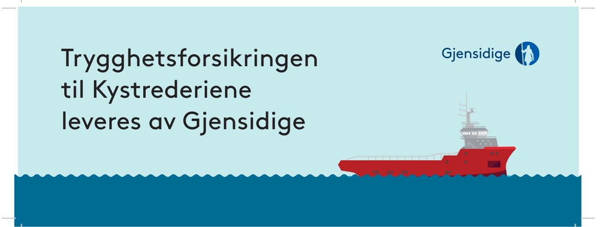
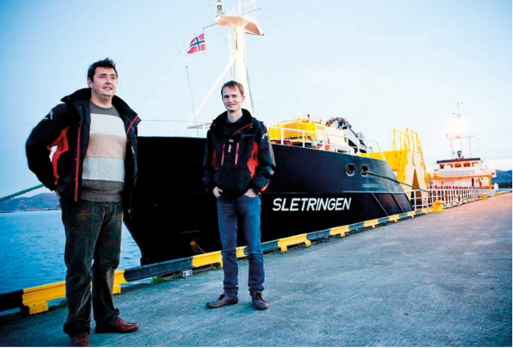

Bulk som nå ble til Berge Rederi AS.
Kursen videre ble i denne pro-
sessen var avklart; nå gikk det mot
selvlossere og transport rettet mot
fôrprodusenter og kontrakter med
industrien. Lokale gründere i Frøyfisk
med Jørn Erling Larsen ble med
videre som investorer, og på befrakt-
ningssiden fortsatte samarbeidet
med Rimship i Trondheim. Samme år
ble
Froan
(3800 tdw) kjøpt og bygd om
i Tallinn som den hittil største selv-
losseren.
Videre vekst
Berge hadde rettet seg inn mot et
segment i vekst. Utviklingen i hav-
bruksnæringen førte til fordobling av
lakseoppdrett fra 2005 til 2012 med
tilsvarende vekst i produksjonen av
fiskefôr. Samtidig lyktes Berge å
bygge
opp et befraktningsopplegg
som ga god utnyttelse av båtene, mye
korn
produkter fra Kontinentet til fa-
brikkene
i kombinasjon med knust
marmor for Omya fra Hammerfall til
havner i Europa, tømmer, stein og
annet. Og for det tredje ble lagt et
rasjonelt driftsopplegg for en stor del
med utenlandske sjøfolk og påpasse-
lig drift.
Siden 2008 har Magne, Øivind og
Anne Gunn overtatt ti nyere skip som
er blitt ombygd med travers og grave-
maskin, i størrelse fra 1800 til 6000
tdw. Samtidig er de mindre skipene
leid ut eller solgt. Slik sett innebærer
dette en klar effektivisering med økt
transportert volum. I dag teller flåten
9 skip, hvorav fire på 5–6000 tdw bygd
mellom 1999 og 2005.
De senere år er flere skip flagget
inn til NIS, og rederiet har funnet det
naturlig å melde flere skip inn i Kyst-
rederiene. Det er en måte å støtte an-
strengelsene for gode operasjons-
forhold i farled og havn på. Også et
bulkrederi trenger en rasjonell los-
ordning med farledsbevis og mer ef-
fektiv havnedrift med lavere
kostnader.
Det er bygd opp et godt team på
kontoret, men Magne og Øivind som
aktive eiere, Anne Gunn som leder av
TransMar med egenutviklet ISM-
system og ansvar for 130 sjøfolk.
Teknisk driftsansvarlig Hans Anton
Antonsen har mange års erfaring fra
utenriksfart og har kontor på
Orkanger.
Sjøfolkene kommer fra Baltikum og
på Filippinene. Rederiet legger vekt
på en gjennomtenkt mannskaps-
politikk hvor en knytter til seg faste
folk. Det er viktig å følge opp skip og
folk og gi sjøfolkene følelsen av å bli
«sett». Rederiet har gode erfaringer
med blandet mannskap.
Øivind Berge forteller at folkene
blir stående lenge i rederiets tje-
neste. For tiden har rederiet fire
norske skippere, men også overstyr-
mann
som har vært med siden de var
kadett/
lettmatros.
Han mener også
at det er
blitt lettere å få tak i dyktige
sjøfolk de
siste årene. På Kuøya ved
Knarrlag
sund har rederiet eget båthus
og brygge med hurtiggående motorbåt
som blir brukt ved levering av post og
reservedeler når båtene passerer i leia.
Det er mange som er imponert
over rederiets sterke utvikling og det
kommersielle grunnlaget som er
bygd opp. Det hjelper å være i et
segment med sterk volumvekst, men,
Unge redere med ny selvlosser i 2005, Magne og Øivind med Sletringen (2) i 2005.
Foto Ole Morten Melgaard
